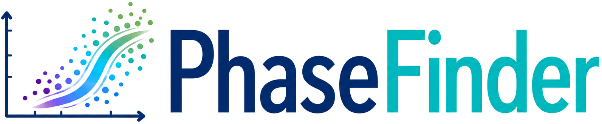

Select the column(s) you want to delete by clicking their headers in the table.
Scanning for missing FCS files in selected folder:
Leave a field empty to use the current auto-scaled value.
Drag the teal ellipse or its center marker to move the cell gate. Change coverage to resize it. Edits apply to downstream stages.